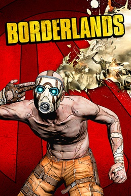
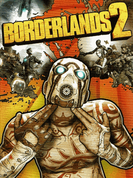
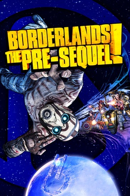
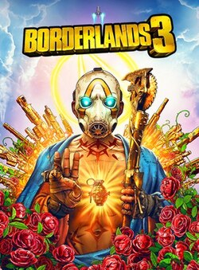
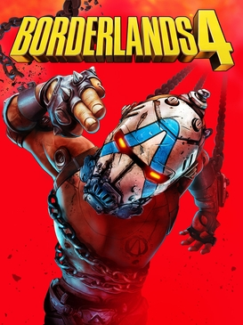

BIENVENUE,
CHASSEUR DE L'ARCHE !
LAISSE MOI TE PRESENTER LE TOP DES JEUX LES PLUS COOLS PARMI LES JEUX COOLS !
N'OUBLIES PAS,
TU PEUX CLIQUER SUR LE NOM DES JEUX SI TU VEUX EN DECOUVRIR PLUS SUR SES PERSONNAGES !
LE CLASSEMENT DES JEUX
| Jeu | Sortie initiale | Lieu principal | Antagoniste principal | Note critique | Durée de l'histoire | Affiche du jeu |
|---|---|---|---|---|---|---|
| Borderlands | 20 octobre 2009 | Pandora, principalement autour des régions désertiques et des installations d’Atlas | Commandant Steele, puis le Destroyer comme menace finale | 4,20/5 | Environ 22 h 30 |
 |
| Borderlands 2 | 18 septembre 2012 | Pandora, avec des déserts, zones glacées, villes et installations d’Hyperion | Handsome Jack, dirigeant d’Hyperion | 4,45/5 | Environ 30 h 30 |
 |
| Borderlands: The Pre-Sequel | 14 octobre 2014 | Principalement Elpis, la lune de Pandora, ainsi que la station spatiale Helios | Colonel Zarpedon ; l’histoire montre également l’évolution de Jack | 3,75/5 | Environ 18 h |
 |
| Borderlands 3 | 13 septembre 2019 | Plusieurs planètes : Pandora, Prométhée, Eden-6, Athénas et Nekrotafeyo | Tyreen et Troy Calypso, chefs des Enfants de l’Arche | 4,05/5 | Environ 22 h 30 à 23 h 30 |
 |
| Borderlands 4 | 12 septembre 2025 | Kairos, planète-prison composée notamment de Fadefields, Terminus Range, Carcadia Burn et Dominion | The Timekeeper, le tyran qui contrôle Kairos | 4,20/5 | Environ 20 à 25 h |
 |